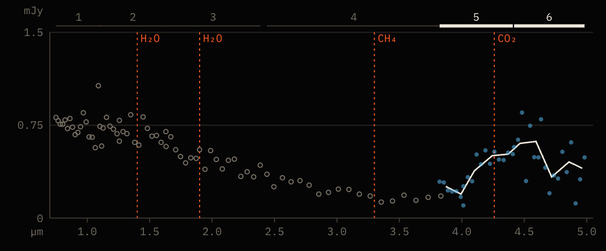

BLINK X
NASA SPHEREx the whole sky in 102 infrared colours every six months
The sky moves.
Catch it.
Blink X lines up real NASA SPHEREx pictures of any spot in the sky, taken months apart, so anyone can see what moved or changed.
khozhijon.github.io/blinkx Free · in any browser · on a phone
Tested on NASA's five challenge objects. It found WISE 0855, the coldest brown dwarf known, by itself.

Open the tool
BLINK X
01
The whole sky, again every six months
A sky that repeatsNASA's SPHEREx photographs the entire sky every six months, in 102 infrared colours.
Something always movesAsteroids, comets, nearby stars. Perhaps a planet nobody has seen.
But nobody can lookEach picture is a 62 MB science file that only a specialist can open.
The challengeShow SPHEREx pictures of any coordinates, and make changes over time easy to see.

BLINK X
05
One click: the whole spectrum of any spot
100 exposuresFrom all six SPHEREx detectors, measured on the spot: 0.75 to 5 µm, on the fly.
It follows the objectA star or brown dwarf that drifts is tracked along its drift.
Honest dotsLight that is not the object's own is drawn hollow. The numbers download as CSV.


BLINK X
06
Built on NASA's open data
01How it worksNASA/IPAC's IRSA archive says which SPHEREx images cover a spot. Blink X reads only the bytes it needs from NASA's open copy on AWS.
02Never stuckOur record of all 101,101 SPHEREx pointings finds 99.9% of the exposures, even when the archive's search is down.
03What comes nextA shared list where volunteers flag candidates for astronomers. Each new SPHEREx release adds another date to every spot.
NASA and space-agency data behind every picture and check
NASA SPHEREx Level-2 images · NASA/IPAC IRSA · AWS Open Data · JPL Horizons · NASA WISE · ESA Gaia DR3 · CDS SIMBAD and Aladin Lite · IMCCE SkyBoT
Open source (MIT), 34 automatic tests. Code and slides written with an AI coding assistant (Claude). No picture, date or measurement is AI-generated.